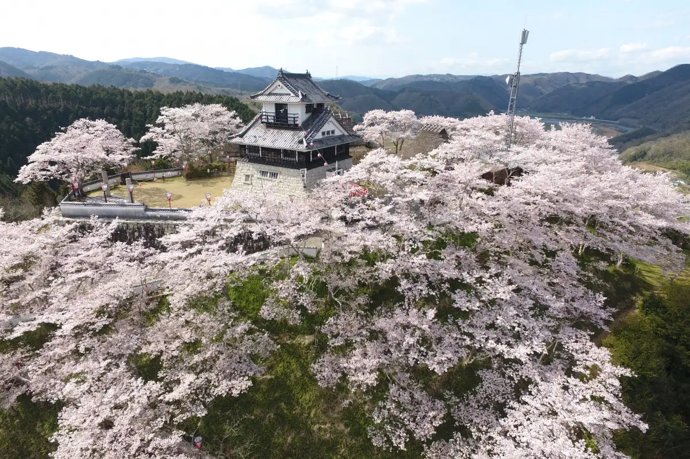
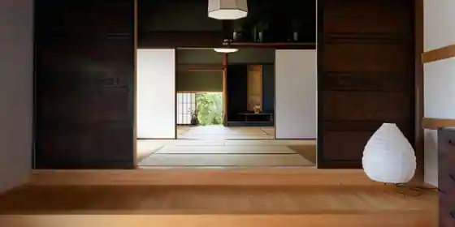
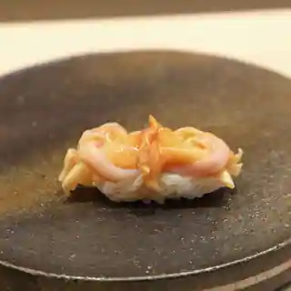

Japan / Okayama / Akaiwa
Akaiwa · Okayama
Akaiwa
Highlighted on the Okayama map.

Akaiwa City Hall · Tourism site


Sights · Things to do · Places to eat · Places to stay · Day-to-day services
Nearby in Okayama: ← Yakage · Asakuchi →
Other towns: Asakuchi · Bizen · Hayashima · Ibara · Kagamino · Kasaoka · Kibichuo · Kumenan · Kurashiki · Maniwa · Mimasaka · Misaki · Nagi · Niimi · Nishiawakura · Okayama · Satosho · Setouchi · Shinjo · Shoo · Soja · Takahashi · Tamano · Tsuyama · Wake · Yakage
All towns in Okayama · Back to all prefectures